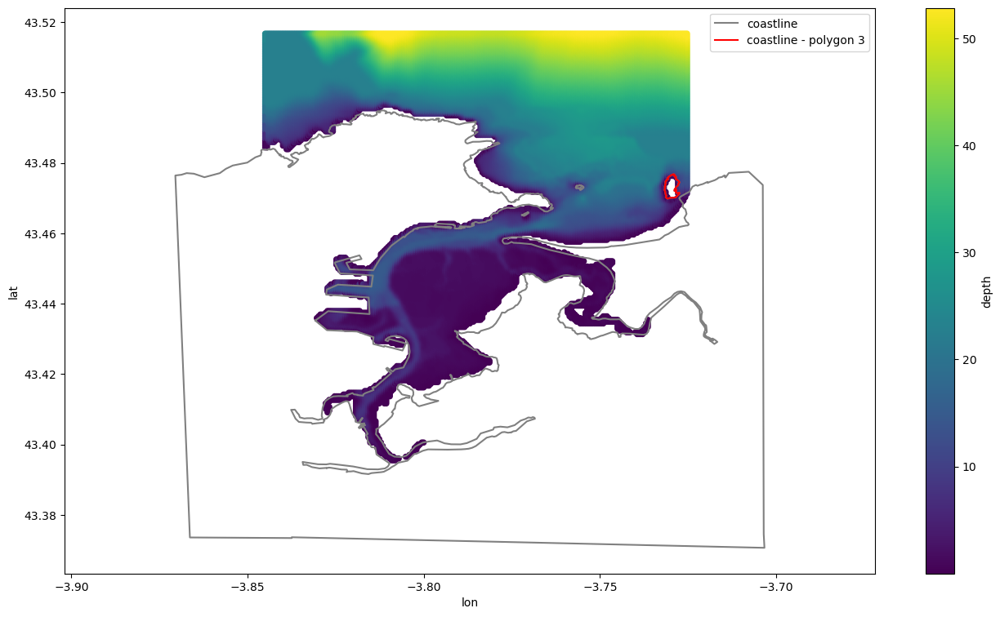

1. Read TESEO’s domain files

If you are running this notebook from
Google colabuncomment and run!pip install pytest and pytest-runin the cell below. Doing this you will installpyteseofrompypiand runpyteseo-teststo check the installation (all tests have to succeed).
[11]:
# !pip install pyteseo && pyteseo-run
Read bathymetry and coastline from TESEO’s format files
[12]:
import warnings
warnings.simplefilter(action='ignore')
from matplotlib import pyplot as plt
from matplotlib import Path
from pyteseo.io import read_grid, read_coastline
import pyteseo.tests as tests_
# path where example data needed by the use case is located
data_path = Path(tests_.__file__).parent / "data"
[13]:
grid_path = data_path / "grid.dat"
coastline_path = data_path / "coastline.dat"
[14]:
grid = read_grid(grid_path, nan_value=-9999)
coast = read_coastline(coastline_path)
Select one polygon of the coastline by its index
[15]:
# Select polygon index
i=3
coast.loc[[i]].head(10)
[15]:
| lon | lat | ||
|---|---|---|---|
| polygon | point | ||
| 3 | 14415 | NaN | NaN |
| 14416 | -3.730684 | 43.475636 | |
| 14417 | -3.730706 | 43.475614 | |
| 14418 | -3.730716 | 43.475672 | |
| 14419 | -3.730725 | 43.475729 | |
| 14420 | -3.730675 | 43.475793 | |
| 14421 | -3.730625 | 43.475857 | |
| 14422 | -3.730575 | 43.475921 | |
| 14423 | -3.730525 | 43.475985 | |
| 14424 | -3.730438 | 43.476049 |
Plot bathymetry, coastline and the selected polygon (in red)
[16]:
ax = grid.plot.scatter(x="lon", y="lat", c="depth", figsize=(16,9))
# plt.fill(coast["lon"], coast["lat"], color="grey")
coast.plot.line(ax=ax, x="lon", y="lat", color="grey", label="coastline")
coast.loc[[i]].plot.line(ax=ax, x="lon", y="lat", color="r", label=f"coastline - polygon {i}")
ax.axis("equal")
[16]:
(-3.878859987333, -3.6949486337070003, 43.363319567585, 43.524003830115)
